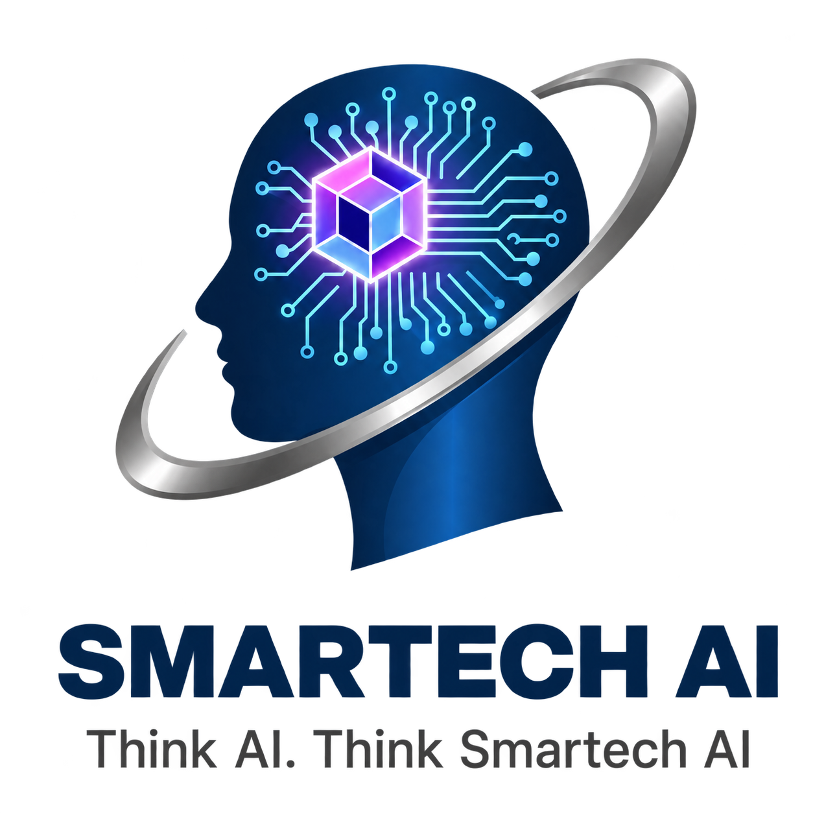

为企业员工建立 AI 能力、为管理层厘清应用方向，并把智能工作流真正部署到日常业务中。
从 AI 基础、提示词、内容生产到实际工作场景，帮助团队把 AI 用在沟通、营销、行政与知识管理上。
梳理企业目标、团队痛点与现有流程，找出最值得优先导入 AI 的环节，制定清晰可执行的路线图。
把策略转化为可使用的智能体、自动化工作流、知识库与内部系统，让团队真正交付结果。
理解目标、团队与流程。
选择适合的 AI 场景。
让员工学会并敢于使用。
根据成果迭代系统。